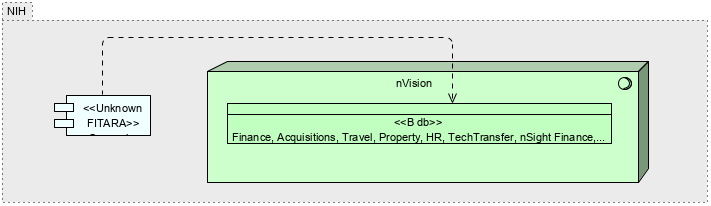

|
|
|
Sunapsis : Application Component (in HR Systems diagram / nVision HR ArchiMate Diagram / Sunapsis ArchiMate Diagram / NCI Business Applications Archimate Diagram / nVision ArchiMate Diagram)
ArchiMate Diagram - Sunapsis ArchiMate Diagram
 link
link
| Jump to: |
|  |
| Model Elements |
| Name | Description | ||
|
|
Connections to database is provided by TNS connection rows a user is allowed to see is limited by VPD by there institute.
Contains:
HR data - Pay Biweekly, Demographics daily, Commission COR pay and FELLOWS is monthly
Finance data - is daily accept for commitments and obligation which is once an hour.
Travel - nightly
Property - nightly
Grants - nightly
NED - daily
Tech transfer - ?
Acquisitions - nightly.
FPS - is months
NOTES : Source data from POTS and AMBIS (acquisitions related). NBS only gets financial's from pots. Approvals, and specifics(vendors quantity) are gotten directly from POTS.
AMBIS only used by MIAID NBS gets just enugh for a requisitions |
||
|
|
https://nvision.nih.gov/nvision_registration/registration_guide.html#IntroductiontonVision
Contains
HR Data
nVision to K2 Process Script nVision data can be received by K2 by means of a K2 Process Script. |
||
|
|
Fogarty Visiting Fellows(Sunapsis) – contains info on foreign fellows, country origin, and visa expiration |
||
|
|
|||